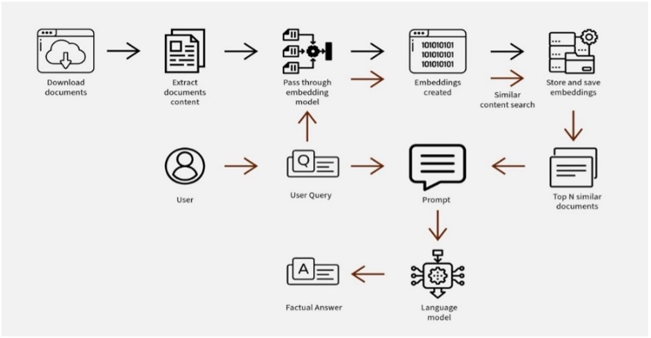
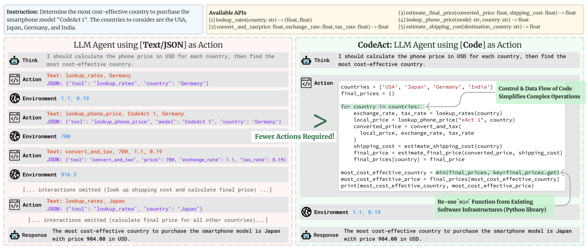

Remember your first time in a massive library? Rows of shelves stretching in every direction, thousands of books, and that moment of “Where do I even begin?” That’s today’s AI landscape—except the library is expanding while you’re standing in it, new wings being constructed hourly. With venture capital flowing like rainfall and headlines trumpeting each new advancement as revolutionary, it’s no wonder so many of us are frozen in place, overwhelmed by possibility and FOMO.
Let’s cut through the static.
The Twin Engines: Transformers and Scaling Laws
Strip away the marketing hype and celebrity CEO tweets, and you’ll find that nearly everything revolutionary in today’s AI world traces back to two fundamental breakthroughs.
The Transformer architecture arrived in 2017 like a master key, unlocking AI’s ability to truly understand context in language and other sequential data. Meanwhile, scaling laws revealed something beautifully simple yet profound: bigger models fed more data with more computing power create predictably better results—not just incrementally, but sometimes exponentially.
These twin engines power the generative AI rocket ship we’re all watching streak across the sky. Everything else? Mostly clever applications and iterations of these core insights.

Where the Real Magic Happens
While your Instagram feed fills with AI-generated portraits and companies scramble to add “AI-powered” to their pitch decks, two applications have quietly proven their worth beyond the hype cycle:
- RAG (Retrieval-Augmented Generation): RAG is simply an AI model that first searches for information in external sources and then uses what it finds to generate better answers. When you use Perplexity, You.com, or ChatGPT’s browsing features, you’re experiencing RAG in action. These systems don’t just make things up—they reach out into the digital world, grab relevant information, and synthesize it into something useful. The result? The wisdom of the web delivered in conversation, not just a list of blue links.

- Content and Code Generation: The blank page’s tyranny is over. Copilot and Cursor serve as tireless pair programmers, while Jasper and Copy.ai help writers transform ideas into text. Artists now speak their visions into existence with Midjourney and DALL-E. These tools don’t replace creativity—they handle the grunt work, freeing you to focus on the uniquely human sparks of inspiration.
These aren’t just impressive tech demos—they’re already reshaping how real work gets done.
Agentic AI: The Toddler Phase
“Agentic AI” has become the newest buzzword in investor pitch meetings—systems that can plan, use tools, and take actions with minimal human guidance. Picture a digital assistant that doesn’t just tell you the weather but books your vacation based on the forecast.
The demos are impressive, but let’s be honest: these systems are in their toddler phase. They show flashes of brilliance followed by inexplicable face-plants. The potential is undeniable, but we have miles to go before these systems can reliably navigate the messiness of the real world without human supervision.

The Great Democratization
Perhaps the most profound shift isn’t technological but sociological. The castle walls around creation are crumbling. Yesterday, building a functional website required years mastering multiple programming languages. Today, someone with no traditional coding background can describe what they want to an AI assistant and receive working code in return.
This doesn’t mean technical skills are becoming obsolete—quite the opposite. As the basics become automated, the premium shifts to higher-order thinking: systems architecture, production engineering, and the ability to orchestrate these new AI capabilities into cohesive solutions. The barrier to entry has lowered, but the ceiling for expertise has risen even higher.
Ethics: From Philosophical Debate to Engineering Requirement
AI ethics has transformed from academic thought experiment to practical engineering challenge. As these systems become embedded in everything from hiring decisions to healthcare diagnostics, organizations are racing to operationalize ethical principles—turning abstract values into concrete guardrails within development pipelines.
This goes beyond ethical lip service—it’s now as essential as cybersecurity or quality assurance. With tightening regulations and increasingly savvy users, ethical AI implementation isn’t merely virtuous—it’s a strategic necessity for business survival and success.
The Ultimate Human Edge: Two Meta-Skills
As the technological landscape shifts beneath our feet, two distinctly human capabilities have emerged as career-defining superpowers:
Question Crafting: AI excels at answering, but remains remarkably poor at asking. As Thomas Wolf, co-founder of Hugging Face, recently observed, “The real competitive advantage in the AI era isn’t having better answers—it’s asking better questions.” While machines pattern-match, humans can still sense the questions hiding in the shadows, the problems worth solving that haven’t yet been articulated. This capacity to frame meaningful questions may be our most distinctly human intellectual advantage.
Perpetual Learning: The half-life of technical knowledge is shrinking rapidly. Yesterday’s cutting-edge is today’s baseline, and tomorrow’s legacy system. Success now belongs to those who approach learning not as a phase of life but as a way of life—continuously absorbing new ideas, experimenting with emerging tools, and adapting their mental models as the landscape evolves.
Finding Your Path Forward
The AI revolution isn’t coming—it’s already here, rewiring industries and reshaping what’s possible. While the sheer pace of change can be dizzying, remember that underneath all the noise are fundamental principles and human constants.
Don’t get lost chasing every shiny new model or tool. Instead, build your understanding of the core technologies, cultivate your distinctly human capacities, and focus on creating real value rather than simply adopting AI for its own sake.
Dive in without fear—experiment with these tools in your daily work and studies. The only way to truly understand AI’s potential is through hands-on exploration. Try different prompts, test various tools, and find your own workflows.
In this new world, your curiosity and questions aren’t just useful—they’re your compass. While AI can give us answers at unprecedented scale and speed, it’s the human ability to ask bold, unexpected questions that will light the path forward. That questioning spirit? It’s your true north star in the expanding AI galaxy.